السلسلة 1
الميكانيك · 40 سؤال. كل سؤال فيه الصورة والصوت. اختار الجواب (ولا جوج إلا كانو صحاح)، ورك على «تأكيد» باش تشوف واش صبتي.
- 40سؤال
- 32باش تنجح
- 1 – 4جواب واحد ولا أكثر
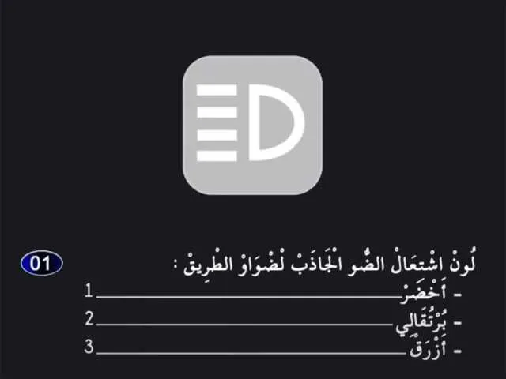
الكلافيي: 1–4 للجواب، Enter للتأكيد وللسؤال الجاي.
السلسلة 1 · النتيجة ديالك
0 / 40
السلسلة 1
الميكانيك · 40 سؤال، بالصوت، مع الجواب الصحيح والشرح.
السؤال 1
بيّن الجواب
الجواب الصحيح: 3
لون إشتعال ضوء الجاذب لأضواء الطّريق فيكون باللّون الأزرق.
السؤال 2
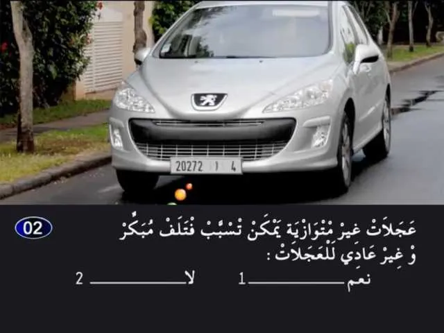
بيّن الجواب
الجواب الصحيح: 1
من بين الأسباب التي تُؤدي إلى تَلف مبكّر وغير عادي للعجلات فنجد مثلا أن العجلات لا تكون متوازية، لذل ينصح دائما أن يتم مراقبة العجلات هل هي متوازية أم لا لكي لا تتلف بسرعة.
السؤال 3
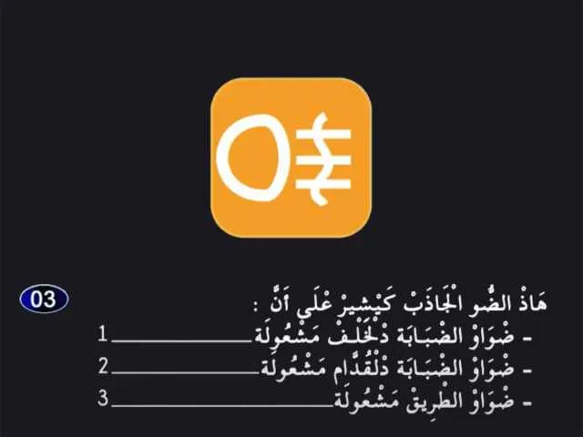
بيّن الجواب
الجواب الصحيح: 1
الضوء الجاذب يشير على أن أضواء الضباب الخلفية تعمل. (لون الضوء الجاذب لأضواء الضباب الخلفية عندما تكون تعمل فيكون باللون الأصفر كما في الصورة).
السؤال 4
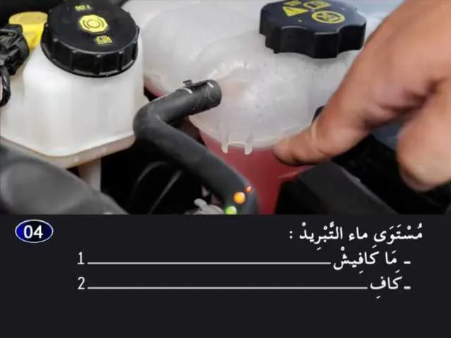
بيّن الجواب
الجواب الصحيح: 2
كما تبيّن الصورة فإن قارورة سائل التبريد تحتوي على سائل التبريد، وهذا معناه أن مستوى سائل التبريد كافي.
السؤال 5
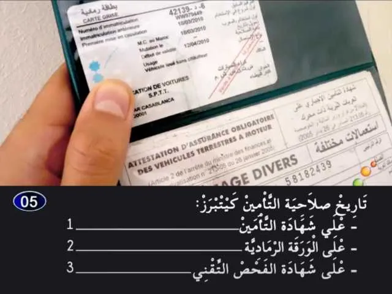
بيّن الجواب
الجواب الصحيح: 1
تاريخ صلاحية التأمين يظهر على شهادة التأمين.
السؤال 6
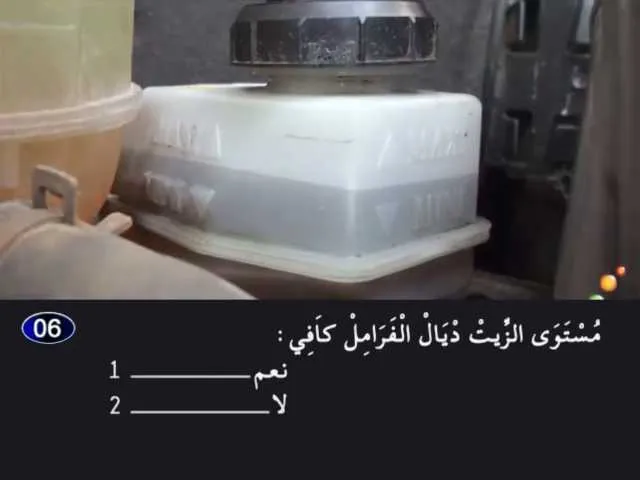
بيّن الجواب
الجواب الصحيح: 1
كما توضّح الصورة فإن زيت الفرامل يتواجد بين (MAXI) و بين (MINI) وهذا يدل على أن المستوى كاف (يكون مستوى زيت الفرامل غير كافي لو كانت الزيت تحت (MINI) لكن في الصورة فمستوى زيت الفرامل فهو فوق (MINI) ويمكنني السّير بهذا المستوى لأنه مستوى كاف. الإجابة الصحيحة هي 1.
السؤال 7
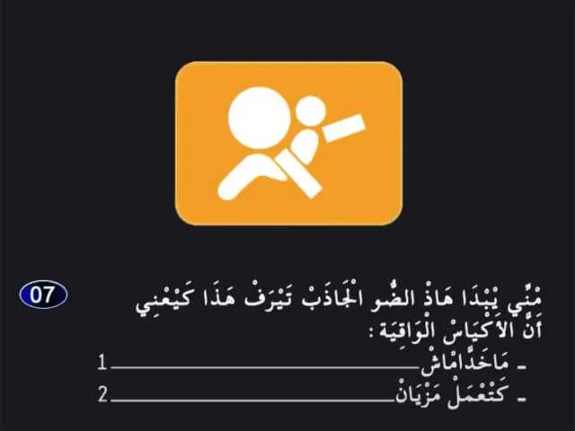
بيّن الجواب
الجواب الصحيح: 1
عندما يبدأ هذا الضوء الجاذب كَايْرَفْرَفْ فهذا يعني على أن الأكياس الواقية (AirBag) لا تعمل.
السؤال 8
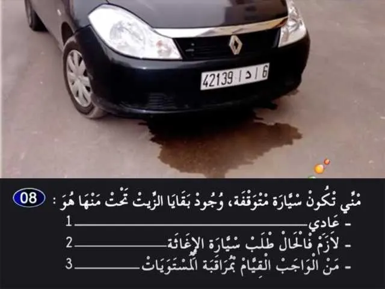
بيّن الجواب
الجواب الصحيح: 3
عندما نجد بقايا زيت تحت سيارة متوقّفة فهذا بسبب فلترات الزيت، لذلك في هذه الحالة فيجب علينا القيام بمراقبة المستويات.
السؤال 9
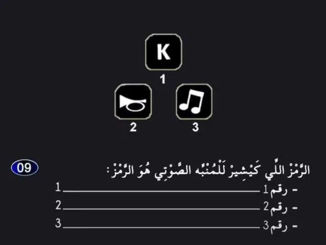
بيّن الجواب
الجواب الصحيح: 2
الرمز الذي يشير إلى المنبّه الصوتي فهو الرمز رقم 2.
السؤال 10
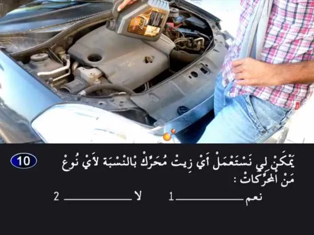
بيّن الجواب
الجواب الصحيح: 2
لا يمكن إستعمال أي زيت محرّك لأي نوع من المحركات، لأن لِكل محرك لديه زيت خاصة به وتتناسب معه، وليس جميع الزيوت صالحة لجميع أنواع المحرّكات
السؤال 11
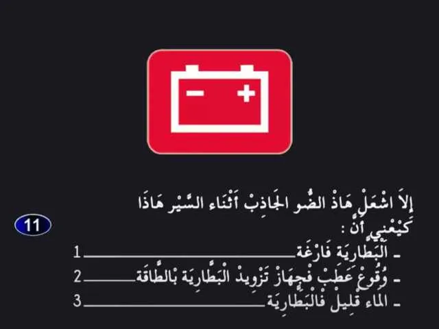
بيّن الجواب
الجواب الصحيح: 2
إذا إشتغل هذا الضوء الجاذب الأحمر أثناء السّير فهذا يعني على وقوع عطب في جهاز تزويد البطّارية بالطاقة.
السؤال 12
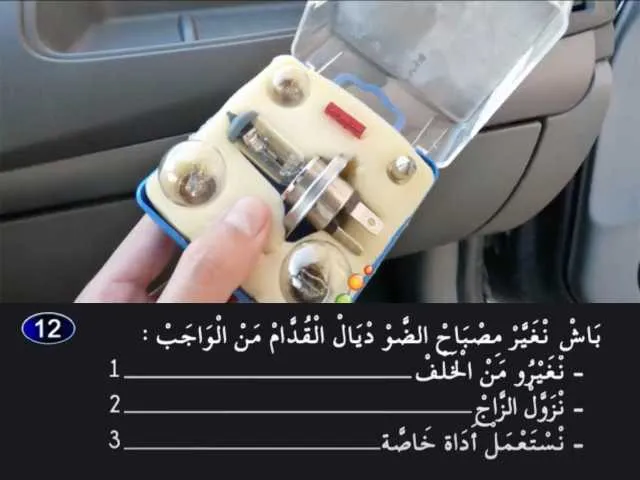
بيّن الجواب
الجواب الصحيح: 1
لكي نقوم بتغيير مصباح الضوء الأمامي للسيارة فمن الواجب تغييره من الخلف، (فتح غطاء المحرك ونقوم بتغييره).
السؤال 13
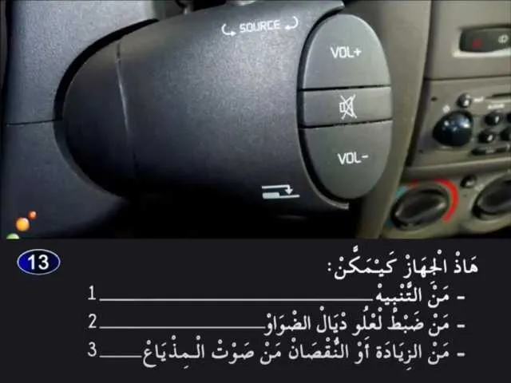
بيّن الجواب
الجواب الصحيح: 3
هذا الجهاز فهو يمكِّنُنا من زيادة أو إنقاص مستوى صوت المِذْياع.
السؤال 14
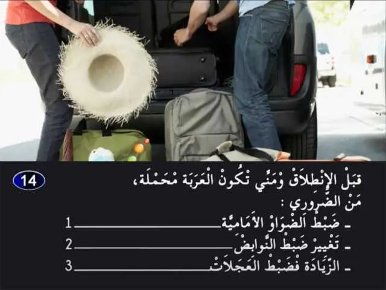
بيّن الجواب
الجواب الصحيح: 1 و 3
قبل الإنطلاق وإذا كانت العربة محملة، فيجب علينا التحقق من ضبط الأضواء الأمامية وأيضا الزيادة في ضغط العجلات لأنها مْحَمْلَة.
السؤال 15
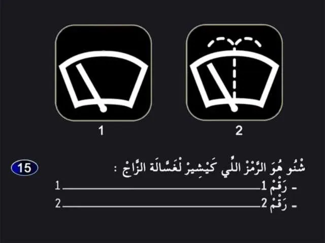
بيّن الجواب
الجواب الصحيح: 2
بالنسبة للرّمز الذي يشير إلى غسّالة الزجاج فهو الرّمز رقم 2. (الرمز الاخر فهو خاص بالمِمْسحة (Essuie-glace)).
السؤال 16
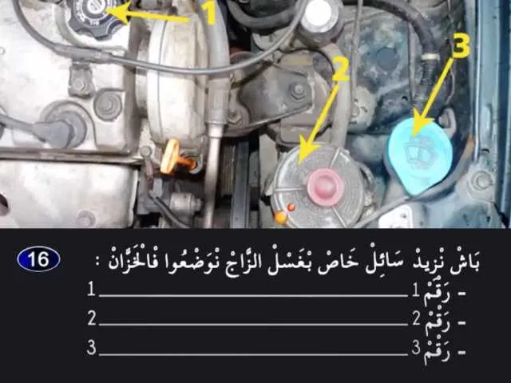
بيّن الجواب
الجواب الصحيح: 3
الخزّان المسؤول عن سائل غسل الزجاج فهو الخزّان رقم 3.
السؤال 17
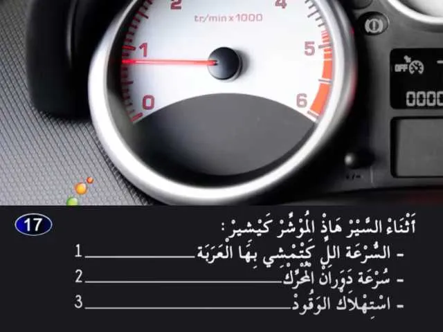
بيّن الجواب
الجواب الصحيح: 2
بالنسبة للمؤشر الظاهر في الصورة فهو خاص بسرعة دوران المحرك أثناء السّير (في 1000).
السؤال 18
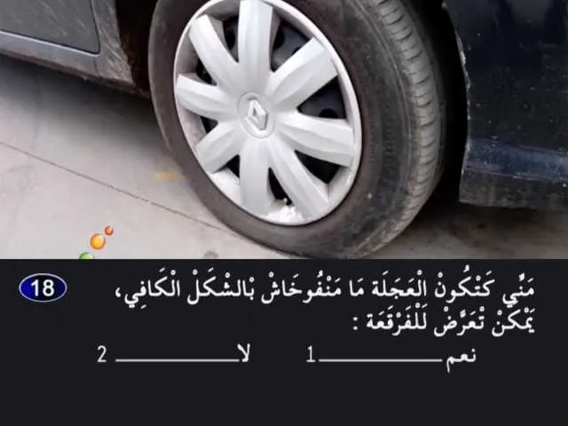
بيّن الجواب
الجواب الصحيح: 1
بطبيعة الحال فيجب على أن تكون عجلة السّيارة تحتوى على ضغط هوائي كافي، وإذا كان ضغط الهواء في العجلة غير كافي فهنالك إحتمال تعرّضها للفرقعة.
السؤال 19
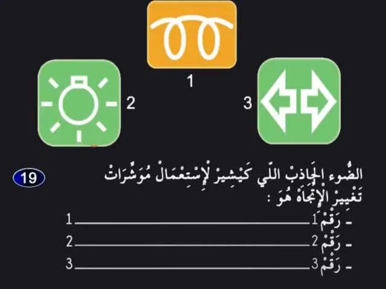
بيّن الجواب
الجواب الصحيح: 3
الضوء الجاذب الذي يشير إلى إستعمال مؤشرات تغيير الإتّجاه فهو رقم 3.
السؤال 20
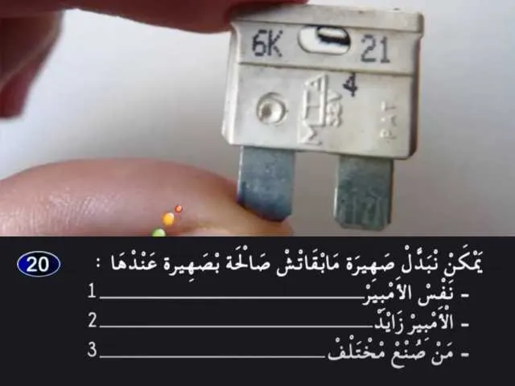
بيّن الجواب
الجواب الصحيح: 1 و 3
يمكنني تغيير صهيرة لم تعد تعمل بصهيرة أخرى لديها نفس الأمبير وأيظا لا مشكل إذا كانت من شركة أخرى (فقط يجب إستعمال نفس الأمبير لأنه لو كان الأمبير أكثر فيمكن أن يسبب هذا الأمر في حريق).
السؤال 21
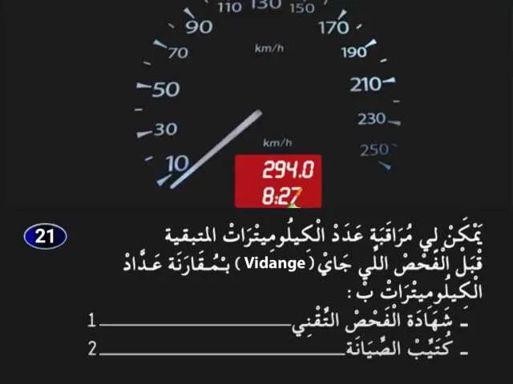
بيّن الجواب
الجواب الصحيح: 2
يمكن لي مراقبة عدد الكيلومترات المتبقية قبل الفحص القادم (Vidange) بمقارنة عدّاد الكيلومترات في كُتَيِّبْ الصِّيانة.
السؤال 22
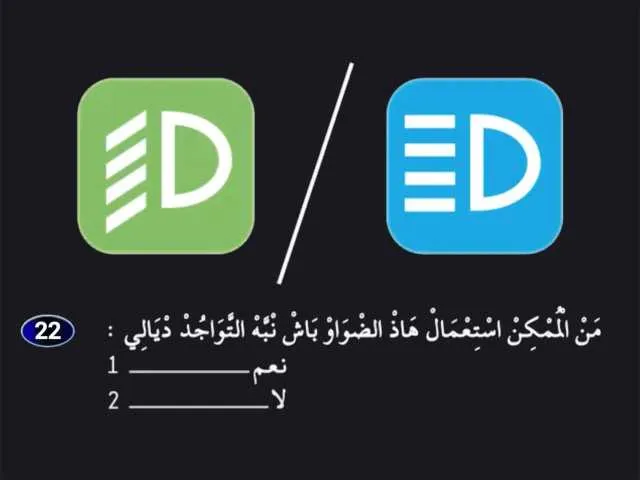
بيّن الجواب
الجواب الصحيح: 1
الضوء الجاذب الأزرق الموجود على اليمين فهو ضوء الطّريق، والضوء الجاذب الأخضر على اليسار فهو ضوء التّقابل. يمكن إستعمالهما للتّنبيه على مكان تواجدي.
السؤال 23
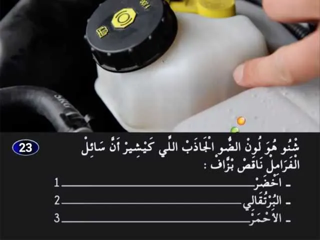
بيّن الجواب
الجواب الصحيح: 3
أضواء الخطر التي تكون في الأضواء الجاذبة فهي تكون باللون الأحمر، إذن في هذه الحالة لون الضوء الجاذب والذي يشير إلى أن سائل الفرامل ناقص فهو اللون الأحمر.
السؤال 24
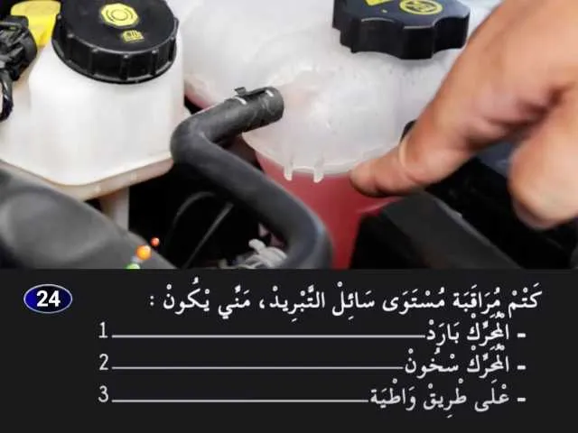
بيّن الجواب
الجواب الصحيح: 1 و 3
تتم عملية مراقبة مستوى سائل التبريد عندما يكون المحرّك بارد، وأيظا عندما تكون الطريق واطية (أي ان العربة لا تتواجد في مرتفع أو منحذر، يجب أن تتواجد في طريق عادية أي واطية) لكي يظهر مستوى سائل التبريد بشكل صحيح.
السؤال 25
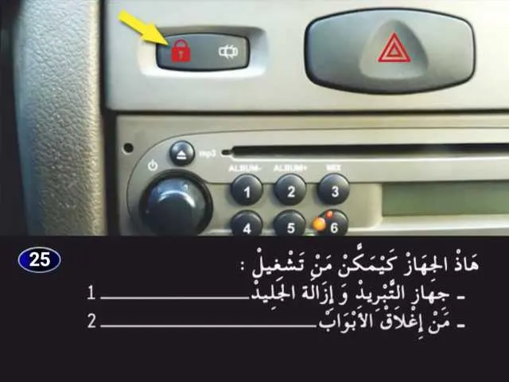
بيّن الجواب
الجواب الصحيح: 3
بالنسبة للجهاز المشار إليه في الصورة فهو يقوم بإغلاق الأبواب.
السؤال 26
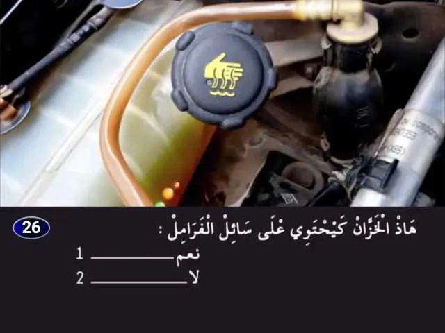
بيّن الجواب
الجواب الصحيح: 2
هذا الخزّان فهو غير خاص بسائل الفرامل، أي أنه لا يحتوي على سائل الفرامل.
السؤال 27
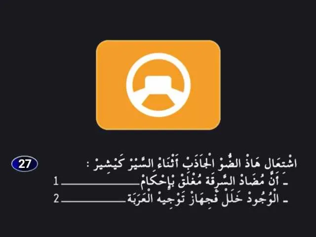
بيّن الجواب
الجواب الصحيح: 2
إذا إشتغل هذا الضوء الجاذب أثناء السّير فإنه يشير لوجود خلل في جهاز توجيه العربة (Volant).
السؤال 28
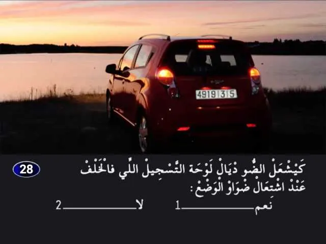
بيّن الجواب
الجواب الصحيح: 1
عند إشتغال أضواء الوضع، فإنه وبشكل أوتوماتيكي يتم أيظا تشغيل أضواء لوحة تسجيل العربة في الخلف.
السؤال 29
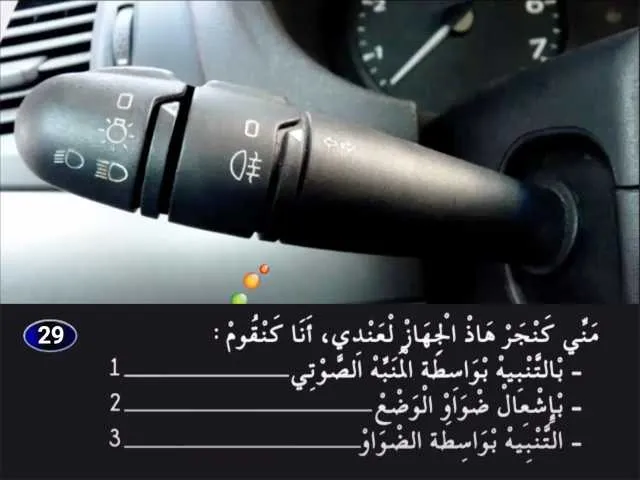
بيّن الجواب
الجواب الصحيح: 3
إذا قمت بِجَرْ هذا الجهاز الظاهر في الصورة إليّ فسوف أقوم بالتّنبيه بالأضواء.
السؤال 30
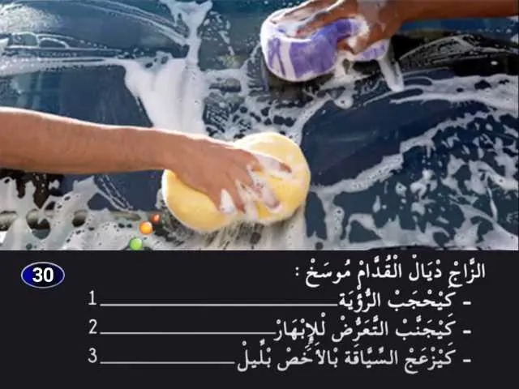
بيّن الجواب
الجواب الصحيح: 1 و 3
إذا كان زجاج العربة الأمامي متّسخ فسوف تكون الرؤية صعبة أي حجب الرؤية، وأيظا سوف يسبب لنا إزعاج في الفترة الليلية لكونه متسخ ولا يمكننا الرؤية جيدا في الليل كذلك. (ولا علاقة للزجاج المتّسخ بإجتناب التعرّض للإبهار.
السؤال 31
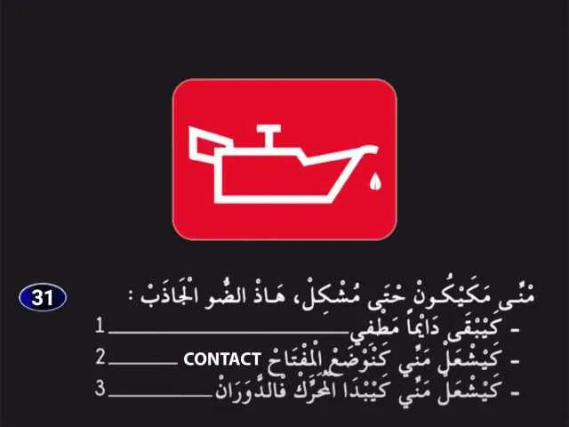
بيّن الجواب
الجواب الصحيح: 2
عندما لا يوجد أي مشكل في العربة فهذا الضوء الجاذب يشتغل فقط عندما نقوم بوضع مفتاح العربة (contact) وبعد ذلك ينطفئ.
السؤال 32
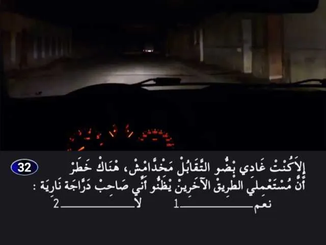
بيّن الجواب
الجواب الصحيح: 1
إذا كنت أسير بأضواء التقابل وهي غير شغّالة، فإن العربات القادمة من الإتّجاه المعاكس سوف تظن على أنني دراجة نارية. لأن أضواء التّقابل غير شغّالة.
السؤال 33
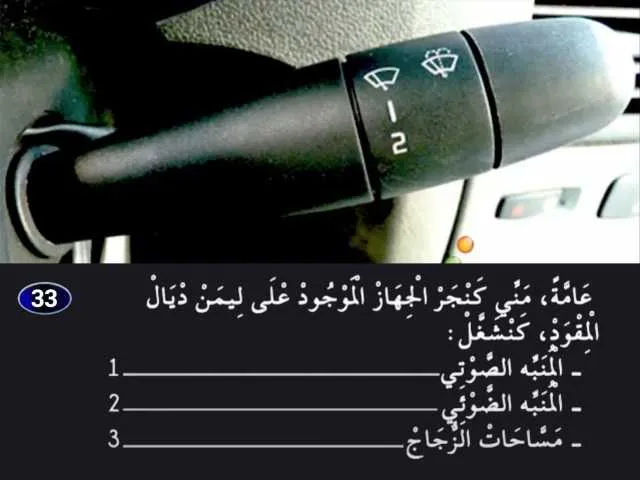
بيّن الجواب
الجواب الصحيح: 3
في الغالب وعامة وعندما أقوم بسحب هذا الجهاز إلى اليمين المِقْود فسوف تشتغل مسّاحات الزُّجاج.
السؤال 34
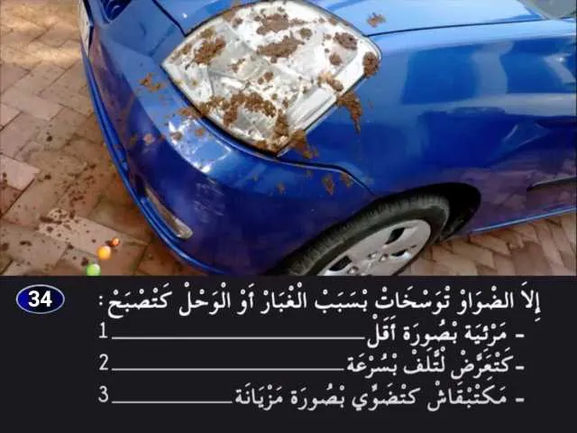
بيّن الجواب
الجواب الصحيح: 1 و 3
إذا كانت أضواء العربة متّسخة بسبب الغبار أو الوحل فسوف تصبح مرئية بشكل أقل وأيظا سوف لن تضيئ الطريق بشكل جيد بسبب الغبار أو الوحل الذي عليها والذي يمنع الإضاءة الجيّدة (ولن تتلف الإضاءة لأن الغبار والوحل فهو في الخارج وليس داخل مكان الإظاءة).
السؤال 35
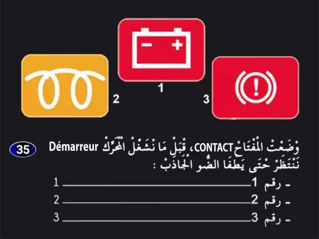
بيّن الجواب
الجواب الصحيح: 2
الضوء الجاذب رقم 2 فهو مؤشر التسخين وهو خاص بسيارات الديزل، يسمح نظام التسخين المسبق لسيارتك التي تعمل بمحرك الديزل بالتشغيل في أفضل الظروف. حتى لو كان المحرك باردًا. لذلك عندما نضع مفتاح السّيارة (contact) وقبل أن أقوم بتشغيل المحرّك (démarreur) فيجب عليّ أن أنتظر إلى حين أن ينطفأ هذا الضوء الجاذب وبعد ذلك يمكنني إقلاع السّيارة.
السؤال 36
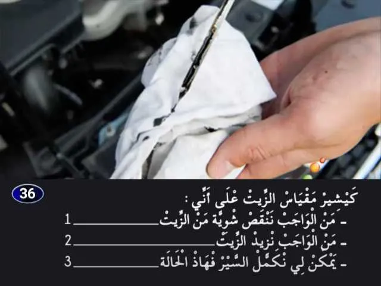
بيّن الجواب
الجواب الصحيح: 3
كما توضّح الصورة فمستوى الزيت في المقياس فهو جيّد، لذلك يمكنني مواصلة السّير.
السؤال 37
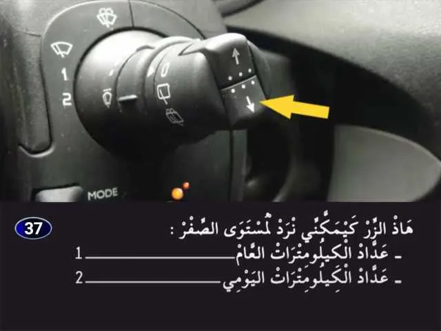
بيّن الجواب
الجواب الصحيح: 2
بالنسبة لهذا الجهاز فهو يُمَكِّنُني من إرجاع عدّاد الكيلومترات اليومي لمُستوى الصّفر. (لا يمكن إرجاع عدّاد الكيلومترات العام للعربة لمستوى الصّفر).
السؤال 38
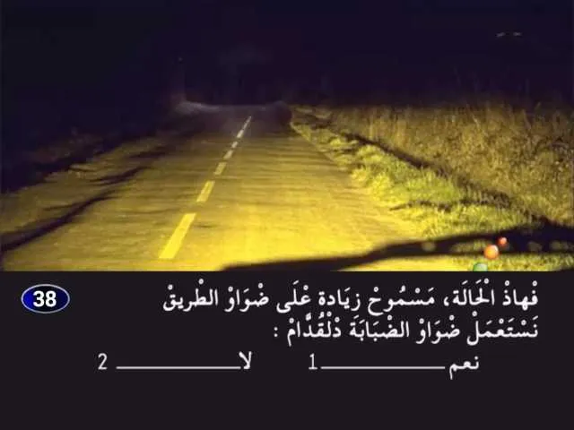
بيّن الجواب
الجواب الصحيح: 1
بما أنه يوجد ضباب فمسموح لي إستعمال أضواء الضباب الأمامية.
السؤال 39
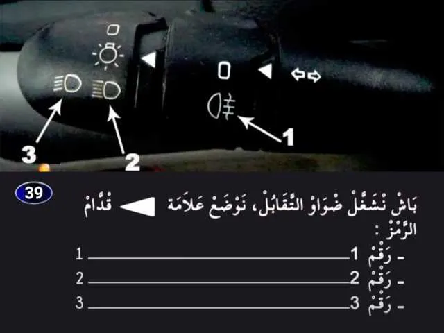
بيّن الجواب
الجواب الصحيح: 3
لكي أقوم بتشغيل أضواء التّقابل فيجب عليّ وضع العلامة قرب الرّمز رقم 3، لأن الرّمز رقم 3 هو الرّمز الذي يشير إلى إضواء التّقابل.
السؤال 40
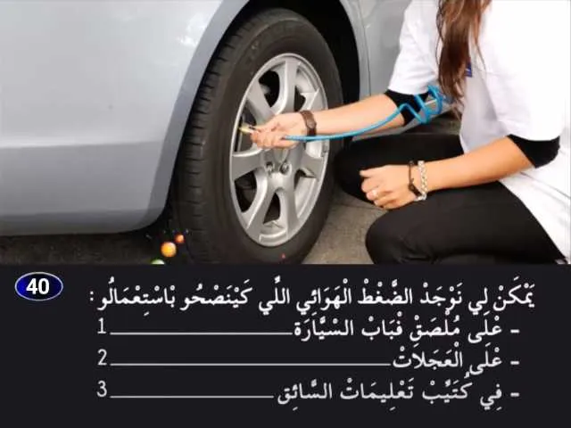
بيّن الجواب
الجواب الصحيح: 1 و 3
يُمكنني أن أجد الضغط الهوائي الذي ينصح بإستعماله في ملصق على باب السيّارة وأيظا في كُتَيِب تعليمات السّائق.